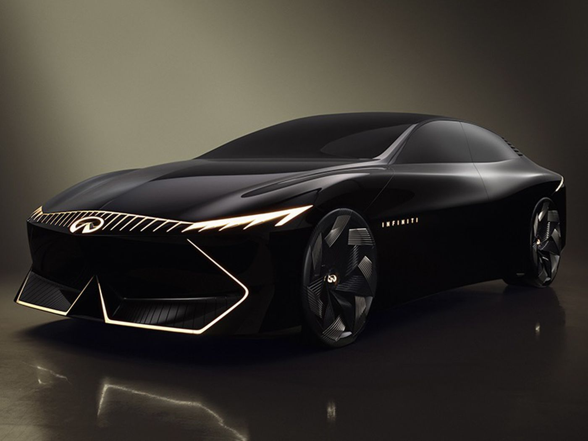

A Desired Concept?
Ronan GlonPInfiniti, known for its plans to release new models, is developing an electric sedan inspired by the Vision Qe concept. Contrary to industry trends moving away from sedans, Infiniti believes in the persistent demand for this vehicle type, particularly in the U.S. market. Bob Welby, Infiniti's senior director of operations, highlighted the brand's historical significance, passionate fan base, and ongoing interest in sedans.

The article mentioned earlier models like the G35 and G37, derived from Nissan Z, which prioritized performance over comfort, targeting European sport sedans like the BMW 3 Series. Even in 2023, these models maintain a dedicated following. However, with the approaching end of the Q50's life cycle, Infiniti faces a future without a sedan. This contrasts with their current lineup, which heavily features four SUVs, an area in which Infiniti has excelled in the past decade. Bob Welby emphasized that the focus on SUVs would continue, even if sedans persist. Furthermore, the impending arrival of the next-generation QX80, hinted at by the QX Monograph concept, reinforces the brand's commitment to SUV development and solidifies their strategy in that segment. Infiniti's dedication to SUV development is evident in their strategic focus.